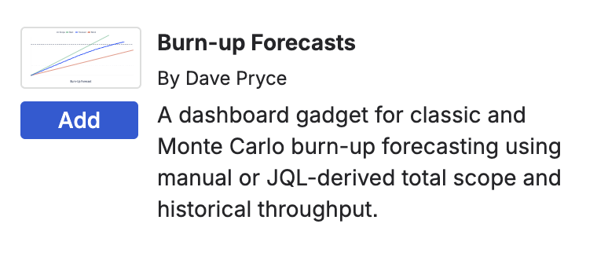
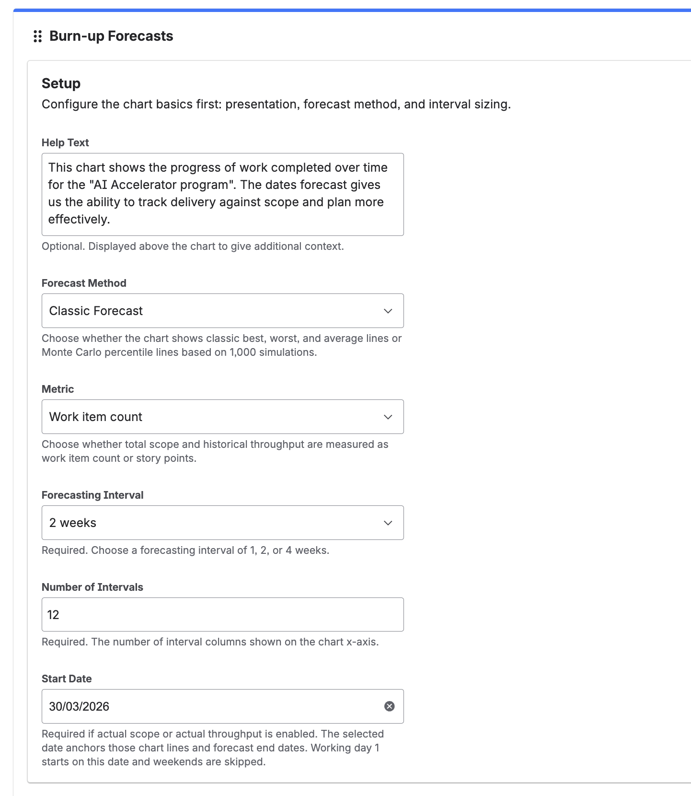
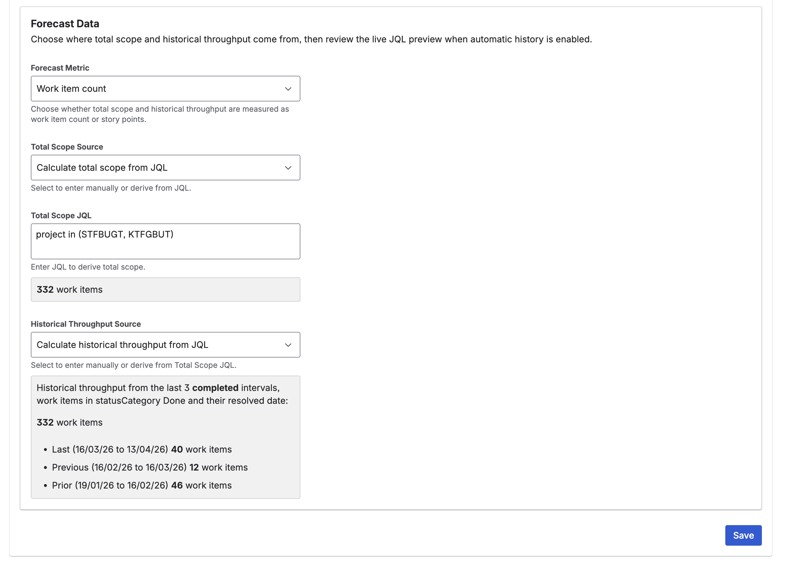
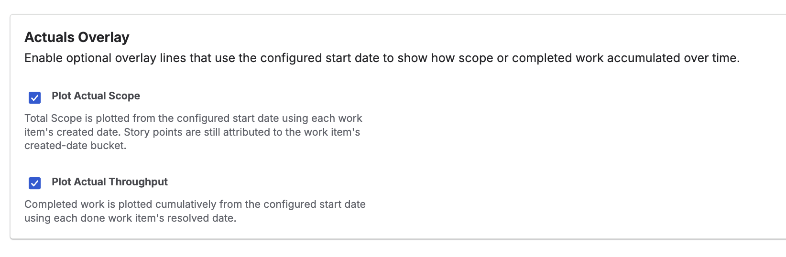
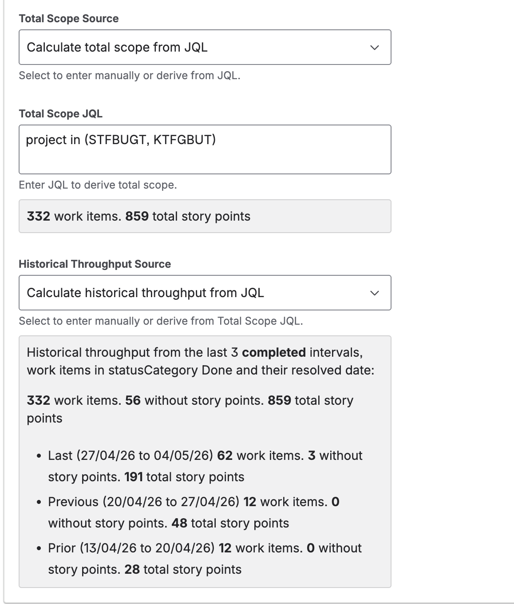
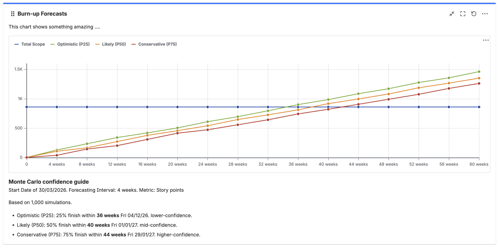

Burn-up chart
A burn-up chart compares completed work with the total planned work so you can see whether delivery is keeping up.
Jira Dashboard Gadget Guide
Give your organisation a clear picture of total scope, track progress in real time, and forecast delivery dates with confidence — so teams can plan ahead and stakeholders always know where things stand.
What It Does
A burn-up chart compares completed work with the total planned work so you can see whether delivery is keeping up.
Choose the classic best, average, and worst-case view, or switch to Monte Carlo mode for Optimistic (P25), Likely (P50), and Conservative (P75) confidence lines based on 1,000 simulations.
Scope and past delivery can come from manual values, a typed JQL query, or a saved Jira filter. Measure work by work item count or story points.
Setup
Configuration
Reading The Output
The blue Total Scope line shows the full amount of work to complete, either as work item count or story points. When a scope-change scenario is configured, a lighter blue scenario line is added based on the configured percentage. When actual scope change is enabled, the Total Scope line grows over time from work item created dates.
Classic mode shows Best Case, Average Case, and Worst Case lines. Monte Carlo mode shows Optimistic (P25), Likely (P50), and Conservative (P75) percentile lines. When actual throughput is enabled, a separate cumulative completed-work line is also shown.
The guide beneath the chart names each forecast line's likely completion interval. When financial configuration is set, each forecast option also shows projected cost using your selected currency and interval cost. For beyond-range outcomes, the cost is shown as Beyond <symbol>Y. When a scenario is active, the guide also shows the signed scope change value. When a start date is set, each entry also shows a projected finish date in the format N week(s) Weekday dd/mm/yyyy. The guide header shows the start date and forecasting interval used in the calculation.
Key Caveats
Screenshots






Support
Found something that does not work as expected? Raise a bug report so we can investigate and fix it.
Raise a bug reportHave an idea for a new feature or an improvement to how the gadget works? We would love to hear it.
Suggest an enhancementNot sure how a feature works or how to configure it? Raise a question and we will get back to you.
Ask a questionYou can also browse all open issues to see if your question or bug has already been reported.